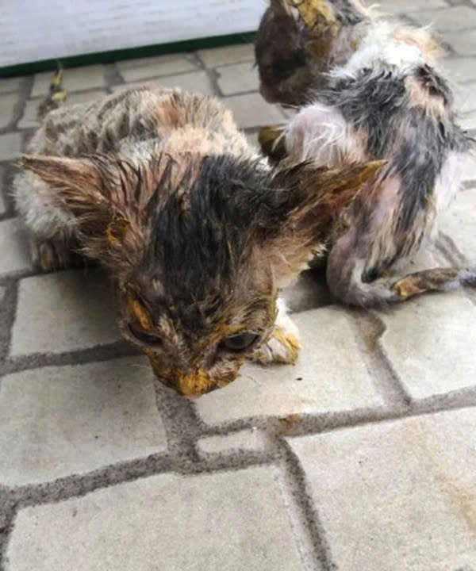

Cuộc gặp gỡ định mệnh
Những chú mèo được tìm thấy trong tình trạng rất đáng thương
Trong một buổi chiều muộn trên đường trở về nhà tại thành phố Quảng Châu, tỉnh Quảng Đông (Trung
Quốc), cô Yue You Meng, 27 tuổi, đã vô tình nghe thấy những tiếng kêu yếu ớt, đứt quãng vang lên
từ ven đường. Ban đầu, âm thanh ấy nhỏ đến mức dễ bị lẫn vào tiếng xe cộ và nhịp sống hối hả của
thành phố. Thế nhưng, bằng một linh cảm khó lý giải, cô vẫn dừng lại và lắng nghe kỹ hơn.
Tiếng kêu phát ra từ một chiếc hộp giấy cũ bị vứt bên lề đường. Khi cúi xuống và mở chiếc hộp
ra, trước mắt cô là một khung cảnh khiến tim người ta thắt lại: hai chú mèo con bé xíu đang co
ro nép sát vào nhau, toàn thân dính đầy sơn màu vàng, lớp sơn đặc quánh bao phủ từ đầu đến chân.
Đôi mắt non nớt của chúng bị sơn dính chặt, gần như không thể mở ra, cơ thể run rẩy vì lạnh, sợ
hãi và kiệt sức.
Chia sẻ lại khoảnh khắc ấy, cô Yue You Meng cho biết:
“Tôi đã nhận ra tiếng kêu phát ra từ chiếc hộp bên lề đường, và khi đến gần mở hộp ra, tôi phát
hiện ra hai chú mèo đáng thương bị sơn màu vàng khắp người. Thậm chí, chúng còn không thể mở mắt
vì sơn dính chặt. Nhìn chúng như vậy, tôi không thể nào bỏ đi được.”
Không do dự, cô quyết định mang cả hai chú mèo về nhà, bất chấp việc bản thân chưa từng chuẩn bị
để nuôi thú cưng. Ngay khi về đến nơi, Yue You Meng bắt tay vào việc tắm rửa và tìm cách loại bỏ
lớp sơn độc hại trên người chúng. Tuy nhiên, quá trình này không hề dễ dàng. Lớp sơn đã khô
cứng, bám chặt vào từng sợi lông và làn da mỏng manh của mèo con, khiến việc gỡ bỏ trở nên vô
cùng khó khăn và đau đớn.

Hình ảnh những chú mèo đáng thương.
Tuy nhiên, do không thể lột được lớp sơn cho 2 chú mèo nên cô Meng đã đem chúng tới 1 trung tâm
động vật địa phương. Tại đây, các bác sĩ thú y đã phải mất nhiều tiếng đồng hồ mới có thể lột bỏ
được lớp sơn đã dính két.
Các bác sĩ thú y đã cắt rất nhiều lông để loại bỏ lớp sơn cho chú mèo.
Bây giờ chúng đã khỏe hơn và đã có thể tự mình đi lại, dù những bước chân vẫn còn chậm chạp và
dè dặt,” cô Meng chia sẻ. “Tuy nhiên, đôi mắt của chúng hiện vẫn chưa thể nhìn rõ, có lẽ do lớp
sơn đã dính quá lâu, gây kích ứng và ảnh hưởng nghiêm trọng đến thị lực. Mỗi khi có ánh sáng
mạnh, chúng vẫn khẽ nheo mắt lại, như thể chưa quen với thế giới xung quanh sau quãng thời gian
dài bị bóng tối bao trùm.”
Cô cho biết thêm, trong quá trình làm sạch lớp sơn vàng bám chặt trên cơ thể hai chú mèo, một
lượng lớn lông đã buộc phải cắt bỏ, khiến ngoại hình của chúng trở nên gầy gò, trơ trụi và càng
làm người nhìn không khỏi xót xa. Những mảng da non lộ ra sau lớp lông bị cắt vẫn còn nhạy cảm,
đôi lúc khiến chúng giật mình vì đau hay lạnh. Dẫu vậy, cả hai chú mèo nhỏ đều tỏ ra ngoan ngoãn
một cách kỳ lạ, như thể hiểu rằng những gì đang diễn ra là để giúp chúng được sống tiếp.
“Nhìn chúng lúc này thật đáng thương, nhưng điều khiến tôi cảm thấy nhẹ lòng hơn cả là tinh thần
của chúng,” cô Meng nói. “Dù đã trải qua nỗi đau và sự sợ hãi, chúng không hề trở nên hung dữ
hay khép mình. Ngược lại, chúng vẫn tò mò với thế giới xung quanh, vẫn tìm đến hơi ấm của con
người.”
Điều kỳ diệu nhất là khi được đưa vào sống chung với những chú mèo khác trong nhà, hai chú mèo
nhỏ dần hòa nhập một cách đáng kinh ngạc. Chúng học cách lần theo tiếng bước chân, dựa vào mùi
hương và âm thanh để tìm bạn chơi. Dù tầm nhìn còn hạn chế, chúng vẫn cố gắng chạy theo những
chú mèo khác, đôi khi vấp ngã rồi lại loạng choạng đứng dậy, tiếp tục cuộc chơi như chưa từng bị
tổn thương.
Những khoảnh khắc ấy khiến cô Meng không khỏi nghẹn ngào. “Có lúc tôi nghĩ, nếu là con người, có
lẽ chúng đã gục ngã từ lâu. Nhưng chúng thì không. Chúng vẫn chọn cách tin tưởng, vẫn chọn vui
vẻ và vẫn khao khát được sống.”
Hiện tại, tình trạng của hai chú mèo vẫn đang được theo dõi sát sao. Các bác sĩ thú y cho biết
cần thêm thời gian để đánh giá khả năng phục hồi thị lực của chúng, cũng như tiếp tục chăm sóc
da và lông cho đến khi cơ thể hoàn toàn bình phục. Con đường phía trước vẫn còn dài, nhưng so
với khoảnh khắc được phát hiện trong chiếc hộp ven đường, cuộc sống của chúng giờ đây đã rẽ sang
một hướng khác – an toàn hơn, ấm áp hơn và tràn đầy hy vọng.
Tuy nhiên, điều khiến nhiều người không khỏi trăn trở là nguyên nhân thực sự dẫn đến thảm cảnh
này vẫn chưa được làm rõ. Hiện vẫn chưa thể xác định liệu hai chú mèo đã vô tình rơi vào thùng
sơn trong lúc lang thang, hay chúng đã bị ai đó cố tình sơn khắp người rồi bỏ rơi một cách tàn
nhẫn. Dù sự thật là gì, hình ảnh hai sinh linh bé nhỏ co ro trong lớp sơn vàng vẫn để lại một
câu hỏi lớn về trách nhiệm và lòng nhân ái của con người đối với động vật.
Câu chuyện của hai chú mèo không chỉ là một phép màu nhỏ giữa đời thường, mà còn là lời nhắc nhở
âm thầm rằng: chỉ cần một chút quan tâm, một hành động kịp thời, cũng có thể cứu lấy cả một sinh
mệnh.

Hiện, 2 chú mèo đã khỏe hơn.